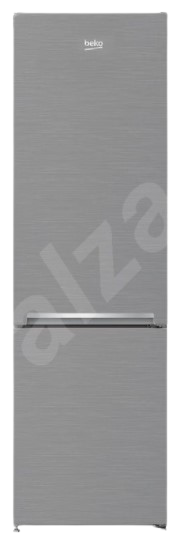
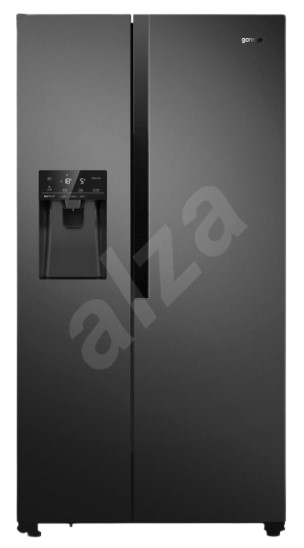

Americká chladnička dvojdverová, energetická trieda E, klimatická trieda SN, N, ST a T,
objem chladničky 371l, objem mrazničky 191l, počet chladiacich okruhov 1, antikorová
farba,
funkcie: automatické odmrazovanie, výrobník ľadových kociek, výrobník ľadovej triešte,
výdajník vody, zásobník na vodu, s displejom, nulová zóna, LED osvetlenie, indikácia otvorených
dverí chladničky, super chladenie.

WHIRLPOOL W5 811E W 1+ 5 rokov záruka na kompresor po registrácii
Cena s dph: 304,90€
Chladnička s mrazničkou dole, energetická trieda F, klimatická trieda N-T, objem chladničky
228l,
objem mrazničky 111l, smer otvárania: voliteľný, počet políc chladničky 4, počet
priehradiek
mrazničky 3, počet chladiacich okruhov 1, biela farba, funkcie: automatické odmrazovanie,
s displejom,
LED osvetlenie.
SAMSUNG RS67A8811B1/EF+ 10 rokov záruka na kompresor
Cena s dph: 998,90€
Americká chladnička dvojdverová, energetická triedaE, klimatická trieda SN a T, objem
chladničky 409l
,objem mrazničky 225l, smer otvárania: doľava, počet políc chladničky 4, počet priehradiek
mrazničky
6, počet chladiacich okruhov 2, čierna a antikorová farba, funkcie: total No Frost, s
pripojením na vodu,
výrobník ľadových kociek, výrobník ľadovej triešte, výdajník vody, s displejom, LED
osvetlenie.

BEKO CSA270K30XPN
Cena s dph: 293,90 €
Chladnička s mrazničkou dole, energetická trieda F, klimatická trieda SN a ST, objem chladničky
175l, objem
mrazničky 87l, smer otvárania: voliteľný, počet políc chladničky 4, počet priehradiek mrazničky
3, počet
chladiacich okruhov 1, antikorová farba, funkcie: LED osvetlenie, manuálna regulácia teploty,
LowFrost,
statické chladenie, 170.8×54×60cm (V׊×H).

GORENJE NRS9182VB InverterCompressor
Cena s dph: 864,90 €
Americká chladnička dvojdverová, energetická trieda E, klimatická trieda SN, N, ST a T, objem
chladničky 371l,
objem mrazničky 191l, počet políc chladničky 5, počet chladiacich okruhov 1, čierna farba,
funkcie:
automatické odmrazovanie, výrobník ľadových kociek, výrobník ľadovej triešte, výdajník
vody, zásobník na
vodu, s displejom, nulová zóna, LED osvetlenie, indikácia otvorených dverí chladničky,
super chladenie,
super mrazenie, Multi-AirFlow.